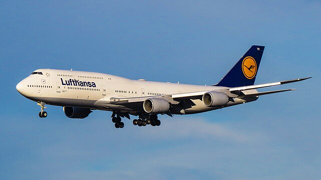

TAP Air Portugal
TP863

Partida
LIS
9:25 PM
Chegada
CDG
11:51 PM
Km de Distância: 1,250 km
Tempo de Voo: 2h 30m
Aeronave: Airbus A319
Registro: CS-TTP
País de Registro: Portugal
Companhia: TAP Air Portugal